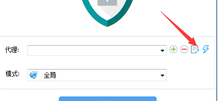

step1:下载软件 然后安装，一路确认或安装通过
step2:第一次使用点开加号，添加ss/ssr线路（即第二个）
step3:输入我发给你的服务器地址和端口密码,其他不变，然后保存连接
step11:如果要修改服务器地址请先断开代理
step13:打开软件选择 进去编辑把服务器替换成
45.76.222.106 45.32.12.140 172.104.100.174 144.48.4.226 供选择替换，优先45和45这个线路